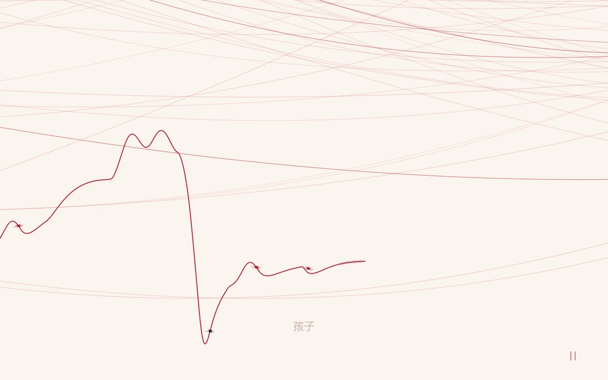

用操作表达关系
普通线、贵人线与黑线有不同的接触和缠绕条件，关系的形成也伴随断裂与磨损。
 ROLAND施浩然 · PORTFOLIO
ROLAND施浩然 · PORTFOLIOPROJECT 03 / 交互叙事实验 / Godot / Windows 原型
用一根线，走过八十秒。

MY WORK / CONTRIBUTION & RESULTS
个人项目｜主题、交互规则与 AI 协作制作
交互原型；本地开发工程与公开预览包版本不同，仍有历史测试待修。
THE IDEA
以命运三女神和福尔图纳为灵感，制作的艺术品类游戏，奈何本人技术能力和美术能力有限，效果也比较有限。
普通线、贵人线与黑线有不同的接触和缠绕条件，关系的形成也伴随断裂与磨损。
过程只展示完整画作的一小部分，回看后展开全景，让过程与结尾形成视角变化。
F8 打开人物与关系参数工具，可调整张力、引力与耐久等规则，便于比较体验差异。

解压后运行 Line.exe，确保 Line.pck 与程序在同一文件夹。Enter 开始，按住并拖动红色线头改变方向，Esc 暂停，F11 全屏，F8 打开参数工具。主体过程约 80 秒，回顾与展览另行播放。
下载包为 0.1.0 试玩原型，本页 v14 截图来自后续源工程。后续版本仍在调试，玩法与 UI 验收尚未全部完成。